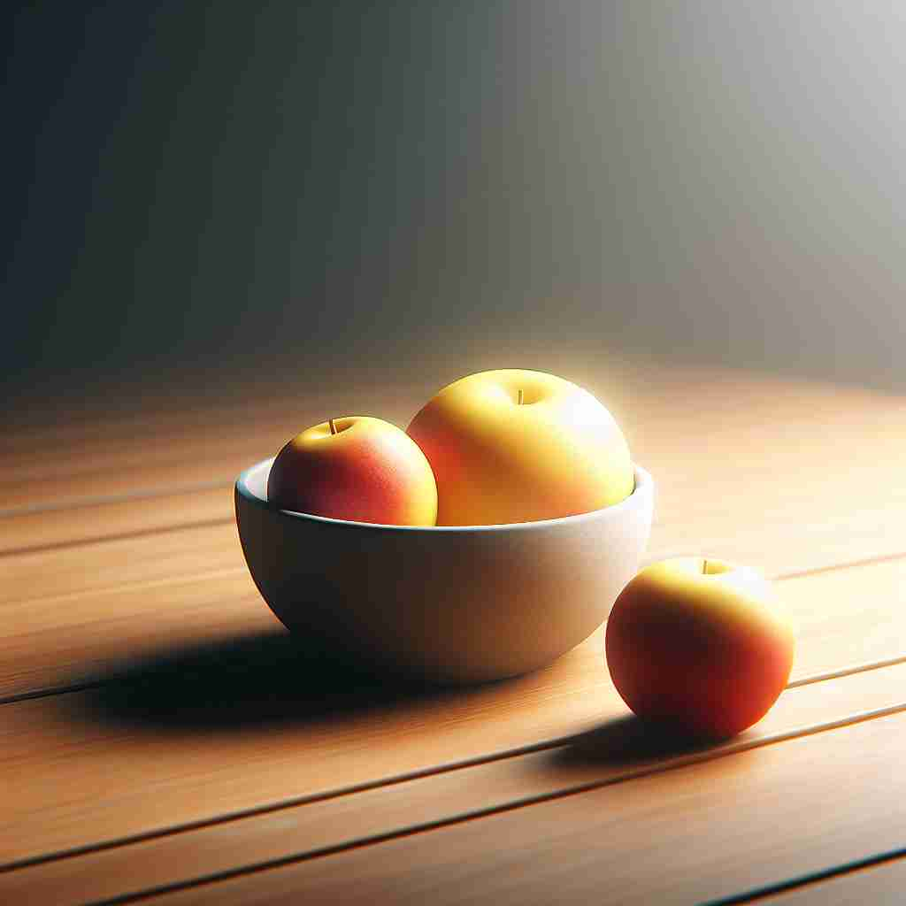

💬 The boy sees few cookies left in the jar. 男孩看到罐子里剩下的饼干不多。

💬 There are a few students raising their hands in the classroom. 教室里有几个学生在举手。
💬 They are a few friends enjoying their time on the island. 他们是几位朋友，正在岛上享受他们的时光。

💬 There are a few apples in the bowl. 碗里有几个苹果。
🧠 想象'few'是一个小盒子，里面只能装下很少的东西。这个核心概念贯穿了'few'的所有用法，无论是形容词还是代词，都表达了'数量少'的idea。记住这个小盒子的形象，就能轻松理解和记忆'few'的各种用法。
🔈 [fjuː]
🗝️ adj./pron. a small number of people or things 少数人或物件
🎭 在一个学校的科学俱乐部中，会议结束时辅导员问：'今天有多少同学能参加下周的比赛？' 几个学生举起了手，仅仅一小部分人选择参加，展示了'few'这个词的小数量含义。
💬 Few people understand quantum physics. 很少有人理解量子物理。
🌳 "few" 是一个基本词，没有明显的前缀或后缀。它的意思是 "少数，几个"，通常用于表示不多的数量。
🕸️ 1.fewer: 较少的 2.fewness: 少量 3.a few: 一些
💡 记住 "few" 可以通过联想到它的发音与 "少" 相近，再结合其使用场景，帮助理解这表示数量较少的概念。